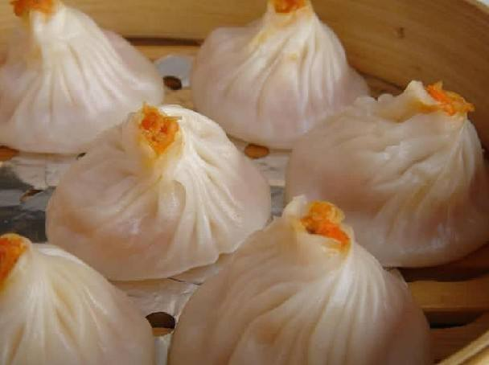

北京时间
重庆小吃火腿鲜肉包子的做法
特级面粉500克，苏打3克，鲜牛奶65克，老酵面30克，白糖35克，饴糖60克，泡打粉3克，无皮 猪肋肉500克，净熟火腿30克，味精1克，金钩15克，猪油9克，甜酱3克，干贝9克，精盐1克，酱油5克，口蘑7.5克，绍酒5克，鲜瘦肉50克，麻 油1克，小葱花5克，胡椒粉0.25克，老姜1片。
火腿鲜肉包子的特色：
皮薄馅大，松泡如棉，鲜美爽口。
教您火腿鲜肉包子怎么做，如何做火腿鲜肉包子
1.干贝洗净盛入碟内，放进老姜1小片，小葱1短节，清水少许，上笼蒸粑后取出撕碎。金钩、虾米洗净，用沸水发胀;口蘑沸水发胀、洗净，片成薄片;火腿切成豌豆大的颗大，瘦肉去筋用刀背捶茸;猪肋肉切成3.5厘米长、1.5厘米宽、0.3厘米厚的小块。
2.锅烧热后下猪油及肉，炒至六成熟时，放下精盐、金钩、甜酱、酱油(3.5克)、绍酒等，继续炒至九成熟，然后下干贝，口蘑稍炒即行起锅。
3.将炒好的肉剁成绿豆大的颗粒，放进瘦肉、味精、胡椒面、麻油、火腿、葱花及酱油(1.5克)，调拌均匀。
4.在面粉中加冷水200克及老酵面、饴糖、牛奶等，反复揉匀，发酵1小时30分钟(冬季时间稍长点)，取出后加白糖、苏打、泡打粉揉匀，分成16个小节(每个重50克)，用手压成中间稍厚、边沿稍薄的圆面饼。
5.将面饼包上肉馅捏拢，在封口处捏10～12花瓣形皱折(此种发面甚嫩，操作捏花瓣时必须迅速，否则会捏不拢)。每个包子垫上1片洗净的菜叶(蒸熟后便于取出)，上笼旺火蒸约5～6分钟即成。
